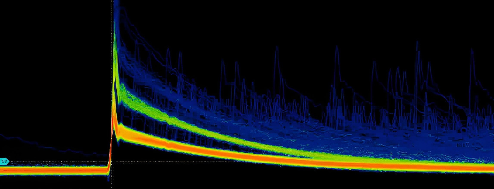
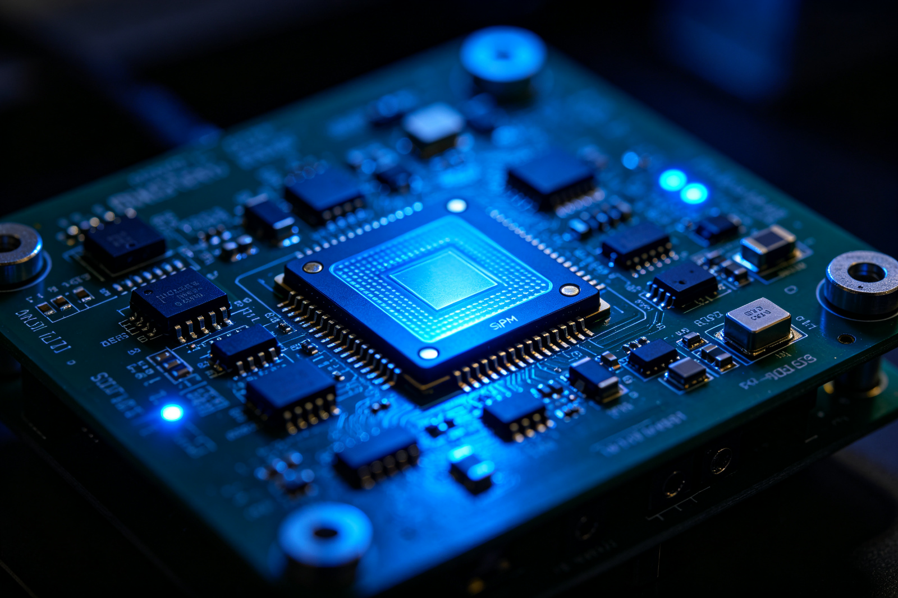
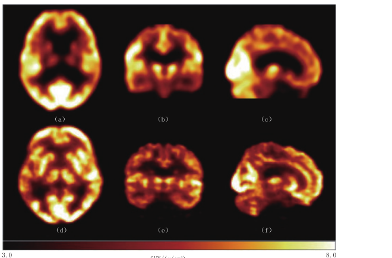
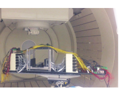
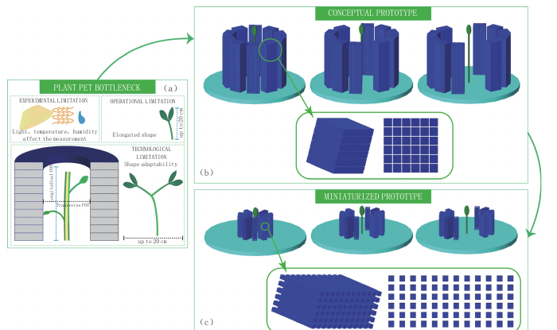

All-Digital PET, Reinventing PET
PET Enables Functional Imaging by Tracing Molecules In Vivo
Positron Emission Tomography (PET) falls under nuclear medicine molecular imaging. Before a scan or experiment, researchers label molecules involved in specific biological processes with positron-emitting radionuclides to form radiotracers. Once inside the body, these tracers are transported by blood flow, undergo membrane transport, participate in metabolism, or bind to receptors. PET does not directly observe organ morphology but infers functional processes such as glucose metabolism, blood perfusion, protein expression, and receptor density based on the spatiotemporal trajectories left by these trace amounts of molecules.
When a positron emitted from nuclear decay annihilates with an electron in tissue, it typically produces a pair of nearly back-to-back 511 keV gamma photons. If detectors surrounding the object receive two such photons within a very short time window, they are deemed a coincidence event and a response line is established between the two detection positions. After accumulating many events, reconstruction algorithms estimate the tracer's distribution in three-dimensional space based on statistical models, system geometry, attenuation, and scatter corrections.
This process chains together matter, energy, light, electricity, data, and images into a long sequence. Any link can limit the final image quality: whether scintillation crystals efficiently convert gamma energy to visible light; whether photodetectors accurately identify weak photons amidst noise; whether front-end electronics precisely measure pulse arrival times and energies; whether coincidence logic loses valid events; and whether reconstruction models fully utilize time-of-flight, interaction depth, and motion information. PET performance is not determined by a single 'resolution number' but by the collective effect of this entire information chain.
PET thus has a dual scientific identity. For clinicians, it is an essential tool for tumor staging, treatment efficacy assessment, neurodegenerative disease research, and myocardial metabolic evaluation; for basic researchers, it is a non-invasive, quantifiable, and dynamically repeatable tracing method in vivo. Structural imaging answers 'what does the tissue look like,' while PET excels at answering 'what is the tissue doing' and 'how this process changes over time.'
However, PET inherently faces a 'low photon count' problem. Tracer activity is limited by radiation safety, pharmacokinetics, and experimental ethics; only a fraction of annihilation events are detected as valid coincidences. Larger objects exhibit more pronounced attenuation and scatter; poorer time resolution leads to greater localization uncertainty on response lines; faster acquisition or lower dose results in fewer usable counts. Improving PET fundamentally involves maximizing the utility of each photon and accurately interpreting every event.
All-Digital PET Establishes an End-to-End Digital Information Pathway
'Digital PET' can refer to devices using digital silicon photomultipliers (SiPMs), digital readout electronics, or digital image processing in different contexts. The all-digital PET discussed here has a stricter engineering definition: the ultra-high-speed scintillation pulses generated by detectors are precisely digitized at their source; subsequent pulse parameter estimation, event organization, coincidence selection, correction, and image reconstruction are as much as possible performed digitally through software systems; additionally, detector units, data interfaces, and imaging workflows adopt modular designs to preserve, trace back, and reprocess raw information.
Traditional analog-digital hybrid PET typically amplifies, shapes, integrates, or discriminates pulses in the analog front-end before converting them into quantities that electronics can more easily process. This approach is mature and reliable but compresses information before entering the computer. Once shaping parameters, thresholds, or coincidence rules are fixed, subsequent results often reflect processed data rather than complete raw measurements. Researchers wishing to change pulse models, re-examine anomalous events, or apply new algorithms may lack sufficient data.
Sampling at regular time intervals appears straightforward but is challenging in PET systems with tens of thousands or more channels due to requirements for sampling rate, bit width, power consumption, cost, heat dissipation, and data bandwidth. The multi-voltage threshold (MVT) sampling proposed by the all-digital PET team changes the sampling coordinate: instead of querying 'what voltage level is it now' at uniform clock intervals, MVT records when pulses cross several predefined voltage thresholds and uses pulse models to estimate arrival time, amplitude, and energy.

The key to this method lies not in 'fewer sampling points' itself but in placing them where they carry information for high-speed pulses. A pulse that quickly rises and then slowly falls may leave two crossing times on each threshold line: one rising edge and one falling edge. Digital algorithms use these time coordinates to fit waveforms, estimate event timing and energy. Hardware shifts from complex analog processing to comparators, time-to-digital converters, and programmable logic, while software takes on greater interpretive responsibilities.
First, using SiPMs does not automatically equate to 'all digital'; SiPMs are a class of photodetectors that can still employ analog processing downstream. Second, an image file being in digital format does not mean the detection chain is fully digital; it depends on when and how raw pulses are digitized. Third, all-digital does not imply no analog physical processes; scintillation, photoconversion, and front-end voltage signals still exist; 'all digital' describes the information acquisition and processing architecture.
All-digital PET also implies a 'full data mindset.' The system does not rush to compress raw data into a single answer at the detector end but retains as much information about individual events' time, energy, position, channel status, and quality indicators. This allows coincidence, correction, gating, and reconstruction to be redone in software. Thus, one acquisition no longer corresponds solely to a final image but becomes an experimental record that can be interrogated under different assumptions.
Digitization must also go hand-in-hand with calibration. Channel gain, threshold deviation, temperature drift, crystal response non-uniformity, time bias, and detection efficiency all enter the measurement process. More data does not automatically eliminate systematic errors but requires stricter calibration models, version tracking, and quality control. The advantage of all-digital PET lies in 'measurable, calculable, correctable' rather than merely being digital.

All-Digital PET Evolved from a Sampling Problem into a Complete Technical System
The development of PET is based on long-term accumulation in nuclear physics, tracer chemistry, scintillation detection, statistical reconstruction, and computational technology. In the second half of the twentieth century, coincidence detection and tomographic reconstruction gradually formed modern PET; PET/CT integrated functional information with anatomical localization at the beginning of this century, driving its application into broader clinical oncology. Photomultiplier tubes, crystal materials, three-dimensional acquisition, iterative reconstruction, and time-of-flight imaging have continuously advanced, but economically and accurately digitizing high-speed scintillation pulses across a vast number of channels has long been a challenge in underlying electronics.
The story of the Digital PET Laboratory began in 2001. The laboratory was established at Huazhong University of Science and Technology, with limited early conditions but chose to tackle fundamental issues from the signal detection level. According to publicly available archives, the team proposed the concept of all-digital PET in 2004 and subsequently developed the MVT digitalization method; around 2008, they advanced the MVT digital detector, and a paper published in 2009 systematically discussed the potential of digitally sampling scintillation pulses for PET timing.
In 2010, PETLab completed an all-digital PET system for small animals with industrial partners. The small animal system was a critical step: it not only required individual channels to function on oscilloscopes but also demanded that large numbers of detector units, data transmission, system synchronization, calibration, and reconstruction work together in real instruments over the long term. Only when an entire system produces stable and reproducible imaging can sampling principles evolve from laboratory methods into instrument technology.
- 2001—2005: Establishment of the laboratory, proposal of all-digital PET concept and MVT sampling method;
- 2008—2010: Development of digital detectors, completion of animal all-digital PET system;
- 2014—2015: Transition from scientific instruments to clinical equipment, completion of a prototype clinical all-digital PET/CT;
- 2017—2019: Advancement in proton PET, specialized brain PET, and clinical trials; the first clinical all-digital PET/CT obtained medical device registration;
- 2020—2023: Clinical installation operation; progress made with plant PET, helmet PET, dual dynamic PET; approval for second-generation clinical systems and specialized brain systems;
- 2014 to present:Continued development towards standard CMOS SiPMs, long-axis whole-body systems, open imaging software, specialization, and applications at the scientific frontier.
After 2014, the team entered a phase focused on clinical system development. Human PET requires larger detection areas, mechanical scales, data throughput, radiation safety, reliability, and regulatory compliance far beyond experimental prototypes. Public reports indicate that the first clinical all-digital PET prototype was integrated within months under modular architecture support but still underwent extensive performance validation, clinical trials, quality systems, and registration reviews. Market entry in 2019 demonstrated that this approach not only produces images but also meets systematic verification requirements for medical devices.
This journey unfolded along a vertical axis from 'key materials-core components-detector modules-whole machines-software algorithms-application validation.' The team studied LYSO and other scintillation crystals, laid out SiPM weak-light detection devices, developed MVT electronics and modular detectors, built PnI imaging software, and completed validations with hospitals, research institutions, and enterprises for small animals, humans, brains, plants, and proton beam scenarios. All-digital PET thus evolved from a circuit board into an integrated system covering the information chain and innovation chain.
The second-generation clinical all-digital PET/CT emphasizes speed and workflow. According to internal documentation, DigitMI 930 can achieve single-bed imaging in 20 seconds under specific clinical protocols; the 135 cm axial field of view system scheduled for 2025 will incorporate a larger range into single-bed acquisitions. It must be noted that scan speed, spatial resolution, sensitivity, and image quality depend on equipment model, tracer dose, patient size, acquisition time, and reconstruction settings, and cannot be unconditionally extrapolated to all examinations.
Specialized PET forms another clear branch. Brain-specific systems bring detectors closer to the head for improved geometric efficiency and uniform fine imaging across the full field of view; dual-dynamic small animal PET aims to observe brain and whole-body activity simultaneously in freely moving animals; plant PET focuses on structural changes related to material transport from roots, stems, and leaves; In-beam PET is positioned near proton therapy beamlines to track positron nuclides generated during treatment. Digitalization and modularity make 'building instruments for specific problems' possible.
Interdependent Capabilities Define the Advantages of All-Digital PET
More Accurate Measurement Closer to the Signal Source
All-digital PET first changes the measurement starting point. Analog shaping typically extracts a few features with fixed circuits, while all-digital paths provide multiple threshold crossing moments of pulses to algorithms for analysis. Researchers can compare different time and energy estimation methods and pile pulse processing on unified data, identify anomalous channels, and improve calibration. It does not guarantee that each event is necessarily more accurate but provides space for continuously approaching accuracy with models and computation.
The more precise the event timing, the more valuable time-of-flight (TOF) information becomes. The difference in arrival times of two 511 keV photons at detectors on opposite sides constrains the annihilation position from an entire response line to a segment. Time resolution in the hundreds of picoseconds cannot directly yield millimeter-level positions but significantly narrows statistical uncertainty ranges, improving signal-to-noise ratios and convergence efficiency for iterative reconstruction. TOF benefits are especially important for large subjects, low counts, and rapid acquisitions.
Freedom to Convert Data Quality into Image Quality
Preserving event-level data allows the system to change energy windows, time windows, coincidence strategies, scatter models, motion gating, and reconstruction parameters in software. A single acquisition can serve routine diagnosis, quantitative analysis, algorithm research, and quality audits. When new algorithms emerge, researchers have the opportunity to reprocess old data without requiring subjects to undergo scans again. This is particularly important for precious animal models, rare cases, long-term cohorts, and non-repeatable beam experiments.
Digital data also facilitates unified interfaces and automated quality control. Each module can record temperature, threshold, noise, count rate, and time bias; software can check status before scanning, monitor anomalies during scanning, and track data processing versions after scanning. Equipment maintenance shifts from 'find the fault then disassemble' to channel-based localization based on data, with cross-center consistency potentially improved through standardized calibration and digital logs.
Modularity Allows Systems to Grow Around Subjects
Traditional whole machines are often optimized for general clinical workflows with fixed geometric configurations. All-digital detection modules encapsulate crystal arrays, photoelectric conversion, digitization, and communication into combinable units; circular rings, flat panels, helmets, partial fields of view, long-axis views, or multi-probe systems can share underlying technology. Research focus shifts from 'rebuilding a PET' to 'reconfiguring detector geometry and imaging protocols.'
The value of modularity is not just rapid assembly but risk isolation. When one channel, block, or data chain fails, local diagnosis and replacement are possible; electronic upgrades do not necessitate rebuilding the entire system; the same detection module can be reused across prototypes, accumulating calibration and software tools. For research instruments, this iterability often matters more than pursuing a single optimal metric.
'Minimal Hardware, Maximal Software' Liberates Algorithm Space
As irreversible processing in the analog front-end decreases, more functions transfer to updatable software. Pulse recovery, crystal positioning, time correction, coincidence selection, image reconstruction, quantitative parameter estimation, and AI algorithms can continuously evolve on computational platforms. Hardware defines measurement boundaries; software decides how information is used; decoupling them means instruments do not freeze all capabilities at the factory.
Open imaging architectures like PnI (Plug-n-Image) further layer device descriptions, imaging protocols, and algorithm modules. As long as data semantics and interfaces are clear, different geometries, algorithms, and applications can be combined within a common framework. Openness does not mean lack of constraints; any replacement module still requires validation; but it allows algorithm developers to access real raw data, enabling collaboration among medical, biological, mathematical, computer science, and electronics teams around the same experiment.
High Sensitivity, Speed, and Low Dose Can Be Reallocated
With more effective counts in PET systems, benefits can be used in various ways: maintaining scan time and dose while improving image signal-to-noise ratio; maintaining image quality while shortening scans; keeping time while reducing injected activity; or increasing temporal resolution for dynamic studies. Long-axis field of view significantly enhances system sensitivity through increased geometric coverage; all-digital detection and fast electronics help process higher data throughput while retaining event information. These are complementary, and the benefits from long-axis fields cannot be simply attributed to digitalization.
| Dimension | Traditional analog-digital hybrid path | Opportunities brought by all-digital path | Conditions still needing control |
|---|---|---|---|
| Pulse information | Pre-shaping, integration or discrimination before outputting features | Source digitization supports re-evaluation of time, energy and abnormal events | Sampling accuracy, model bias, noise and calibration |
| Imaging process | Many stages are determined by fixed hardware | Coincidence detection, correction and reconstruction are more programmable and traceable | Software validation, data governance and computational costs |
| System architecture | Specialized design around fixed whole machines | Detector modules are combinable, suitable for brain, plant, proton and other objects | Mechanical precision, cross-module synchronization and heat dissipation |
| Operation and maintenance upgrades | Hardware changes affect the whole machine; original information is limited | Channel status can be monitored, algorithms and protocols are continuously updatable | Version control, regulatory changes and long-term compatibility |
| Scientific reuse | Old data is constrained by the established processing chain | The same event data can be reanalyzed under new assumptions | Privacy, standard formats, metadata and reproducibility |
Manufacturing, Usage, and Service Models Are Reorganized
Digital modules facilitate automatic testing, batch calibration, and fault localization; iterative general electronics technology may also shorten the R&D cycle. Equipment can be configured with software to adapt to different protocols, allowing natural remote upgrades and quality monitoring. For hospitals, this means shorter examination times, higher equipment utilization rates, and more predictable maintenance; for research institutions, it means the possibility of conducting multiple experiments on the same platform.
However, 'fast manufacturing' does not mean that medical device R&D has no barriers. Crystal consistency, sensor yield, clock synchronization, electromagnetic compatibility, radiation safety, software lifecycle management, clinical validation, and regulatory registration all require long-term investment. Modularity reduces reconstruction costs but amplifies the importance of system engineering capabilities. Truly mature all-digital PET must simultaneously achieve measurable performance, controllable production, reproducible results, and manageable risks.
All-Digital PET Extends Disease Diagnosis into an In Vivo Measurement Platform
Oncologic Imaging Extends Beyond Early Detection
The metabolism, proliferation, hypoxia, receptor expression, and immune microenvironment of tumor cells change before morphological alterations become apparent. PET uses different tracers to observe these processes, which can be used for lesion detection, staging, biopsy assistance, radiotherapy target delineation, treatment efficacy evaluation, and recurrence monitoring. Better time, spatial, and energy measurements enhance the contrast and quantitative stability of small lesions, while rapid imaging reduces patient movement and improves examination experience.
The long-term value of all-digital PET is not simply making all images 'brighter,' but improving quantitative reliability. Standard uptake values are only semi-quantitative; dynamic acquisition combined with input functions and kinetic models can estimate transport, metabolism, or binding parameters. If the system can obtain sufficient counts at lower doses and shorter frame widths, multiple measurements before and after treatment, early drug efficacy assessment, and personalized dose design will have a more solid data foundation.
Neuroscience and Brain-Disease Research Brings Detectors Closer to the Target
The brain has fine structures, high metabolism, and many diseases involve specific neurotransmitter systems, abnormal protein deposition, or localized metabolic changes. Dedicated all-digital PET for the brain places detectors close to the head, aiming for finer and more uniform imaging through higher geometric efficiency and targeted design. DigitMI i30 is involved in clinical studies of Parkinson's disease, epilepsy, and Alzheimer's disease at our institution.
Helmet or wearable PET addresses another long-standing challenge: traditional scans require subjects to lie still, excluding many natural behaviors, sensory stimuli, and social interactions from experiments. If the detection structure can move with head movements and is combined with high-precision motion tracking and correction, researchers may observe brain function under more realistic conditions. Challenges include weight, field-of-view integrity, attenuation correction, geometry changes due to movement, and strict ethical guidelines for human studies.

Drug Development and Small-Animal Research Enable Longitudinal Observation in the Same Subject
Small animal PET allows researchers to continuously observe tracer distribution and clearance within the same animal, reducing individual differences caused by sacrificing animals at different time points. This aligns with ethical guidelines for minimizing experimental animal use. High-resolution all-digital detectors and event-level data are suitable for studying low-count, rapid kinetics, and small structures; modular design can accommodate mice, rats, primates, or specific organs.
In drug development, candidate molecules labeled with radioactivity allow PET to determine if they reach target organs, where non-specific accumulation occurs, how long clearance takes, whether they cross the blood-brain barrier, and how occupancy at targets changes with dose. Long-axis dynamic whole-body acquisition can simultaneously obtain time-activity curves for multiple organs, providing evidence for pharmacokinetics, safety, and first-in-human studies. All-digital PET does not replace biochemical analysis but adds spatial and temporal dimensions to drug measurement.
Cardiovascular, Inflammatory, and Systemic-Disease Imaging Advances from Individual Organs to Organ Networks
Inflammation, infection, atherosclerosis, and immune-related diseases often involve multiple organs. Traditional short-axis PET requires bed movement to observe rapid whole-body processes at the same time. Long-axis all-digital systems covering major organs can simultaneously record blood pool activity, liver and kidney clearance, spleen and bone marrow immune responses, and lesion uptake after tracer injection, providing conditions for studying temporal relationships between organs.
This 'systems biology imaging' is still in the method development stage. Different tissues have different kinetic models; factors such as blood input functions, time delays, motion, scattering, partial volume effects, and large data volumes can affect conclusions. The advantage lies in making problems measurable for the first time; whether breakthroughs occur depends on whether tracer chemistry, experimental design, statistical modeling, and interdisciplinary interpretation keep pace with instrument development.
In-Beam PET Makes the Proton-Therapy Beam Observable
The energy deposition of proton beams in tissue has a Bragg peak characteristic, but patient anatomical changes, positioning errors, and computational inaccuracies can cause range shifts. Proton interactions with tissue produce short-lived positron-emitting radionuclides; In-beam PET aims to detect these signals during or immediately after treatment to indirectly verify beam range. Compared to offline PET, the in-situ online system reduces information loss due to radioactive decay, biological washout, and cross-device body positioning registration.
Dual-panel all-digital PET can leave space for treatment beams and be placed close to patients. High time resolution, large detection area, and high counting processing capability help extract signals in complex backgrounds. Simulations reported on this site have yielded millimeter-level range verification results under specific models and monitoring strategies; however, transitioning from simulation, phantom, and animal experiments to clinical decision-making requires validation in real treatment environments, error propagation analysis, and alignment with dosimetry standards.

MVT Extends Plant, Radiation, and Industrial Measurements Beyond Medicine
The transport of carbon, water, and nutrients within plants is a dynamic process. Introducing positron-labeled molecules into plants and observing their transport with PET systems designed around roots, stems, or leaves can study photosynthetic product distribution, stress responses, and root activity. Given the significant differences in plant morphology compared to animals, fixed circular rings are not always suitable; variable structures and digital modules allow instruments to be tailored around biological objects.
MVT addresses high-speed scintillation pulse measurements, thus having broader applicability beyond PET. The site archives also document its explorations in nuclear radiation detection, security CT, oil well logging, and high-energy particle detection. These applications have different requirements for radiation spectra, counting rates, environmental temperatures, and reliability; medical PET solutions cannot be directly replicated but shared digital concepts can shorten the path from detectors to specialized instruments.

Performance Advances in All-Digital PET Must Generate New Knowledge
From static uptake values to whole-body kinetic parameters
A key shift in future PET will be from 'distribution snapshots' at a single time point to continuous quantitative movies. Combining long-axis coverage, low-noise event measurement, and high-speed reconstruction can simultaneously obtain multi-organ time-activity curves, enabling the estimation of perfusion, transport, metabolism, and receptor binding parameters. Physicians see not just where it is bright but also how fast molecules arrive, exchange rates, retention times, and how treatments alter these processes.
From general-purpose examination equipment to specialized systems for specific diseases, organs, or experiments
Whole-body PET will still be the clinical mainstay, but brain, breast, prostate, intraoperative, proton therapy, and small animal behavior studies have different requirements for geometry, time resolution, and workflow. Modular detectors and software-defined imaging make small-batch specialized systems feasible from an engineering perspective. Future PET may not resemble a single fixed machine but rather a suite of instruments sharing a common digital foundation.
From closed equipment to reproducible open research infrastructure
Event-level data, standardized device descriptions, and replaceable algorithms may support cross-institutional replication. Researchers can share anonymized list-mode data, calibration files, geometric models, and processing containers for different algorithms to compare on the same benchmark. Instrument manufacturers, hospitals, and universities can also collaborate around clear interfaces. However, medical data privacy, file size, commercial intellectual property, and long-term format compatibility require joint governance.
Artificial intelligence will enter the signal chain but cannot bypass physics
AI can be used for pulse classification, crystal positioning, scatter estimation, low-count denoising, motion correction, parametric image generation, and automatic quality control. The rich raw data provided by all-digital PET forms the basis for training and validating these models. At the same time, algorithms must adhere to counting statistics and imaging physics, avoiding the 'generation' of non-existent lesions; clinical models also need cross-device, multi-center, and population validation while retaining uncertainty.
Low-dose, short scan, and delayed imaging expands the study population
Higher effective sensitivity can be used to reduce injected activity for children, healthy volunteers, and populations requiring longitudinal follow-up; it also allows delayed imaging after multiple half-lives of a radionuclide, improving background clearance and contrast for certain targets. Low-dose is not limited to PET alone; PET/CT must also optimize CT dose synchronously, and any population study requires individualized risk-benefit assessment.
Integrated diagnosis and therapy connects 'seeing the target' with 'calculating the dose'
The same molecular targets can be imaged using diagnostic radionuclides or treated using therapeutic radionuclides. PET can assess target expression, drug distribution, and post-treatment response; full digital quantification may help patient selection and individual dose design. Achieving this goal requires a closed loop from tracer production to dosimetry validation involving nuclear medicine, medical physics, clinical practice, computation, and regulatory oversight.
The future of all-digital PET must also face real-world constraints. Richer data means higher storage and computational costs; more flexible software requires complex validation and version management; longer axial field-of-view necessitates more crystals, electronics, cooling, and system corrections; finer quantification demands modeling each error source individually. True progress is not hiding complexity but converting it into measurable, verifiable, and manageable engineering objects.
'Reinventing PET' ultimately measures success by whether previously invisible biological processes become visible, previously unrepeatable experiments become repeatable, and measurements once confined to a few centers gradually become accessible. Full digitization gives the source of information to computation but also places greater responsibility on researchers: respecting physics, preserving evidence, reporting boundaries, and converting every photon event into credible knowledge as much as possible.